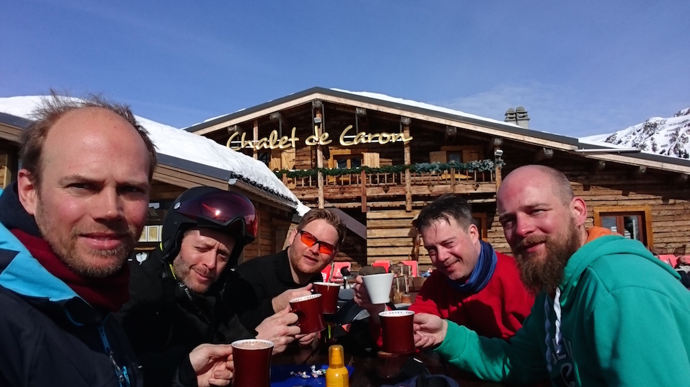
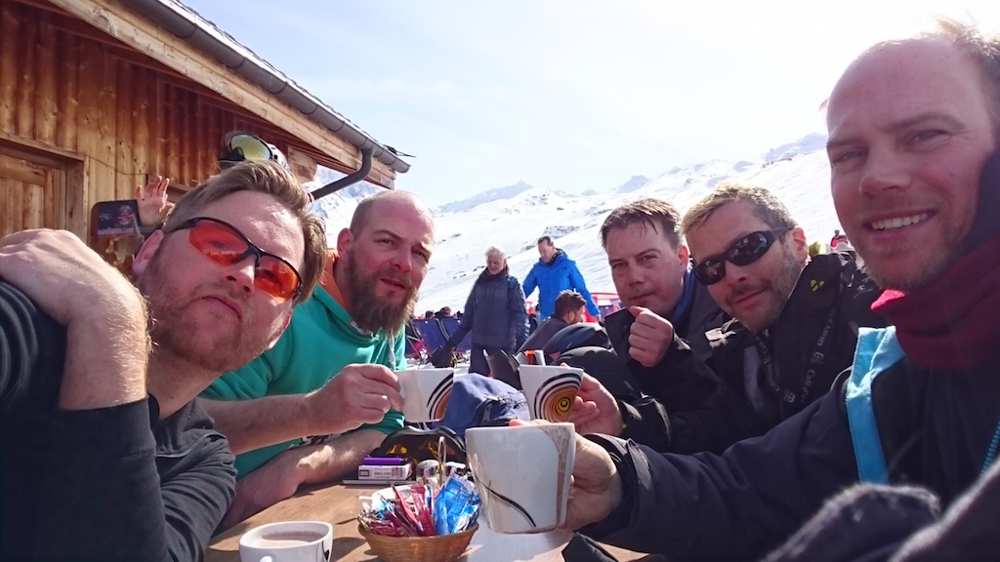
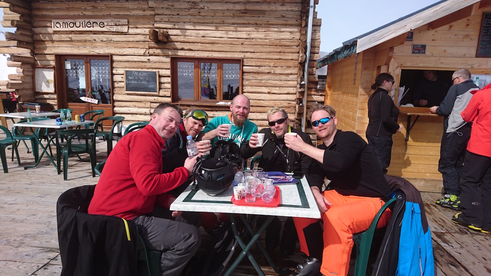
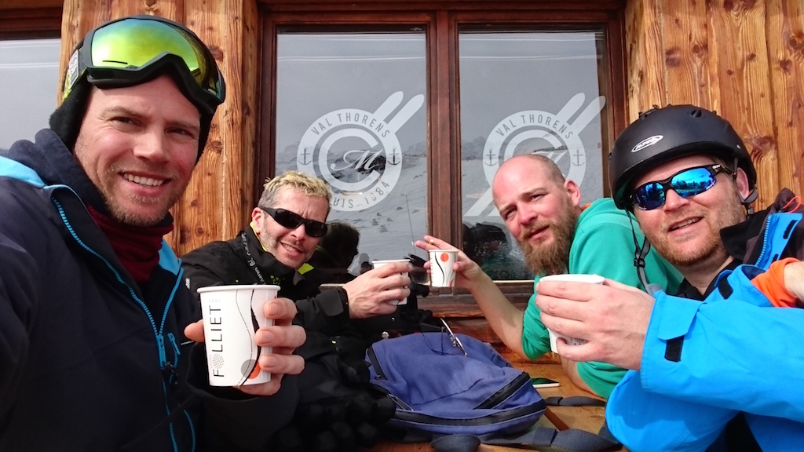
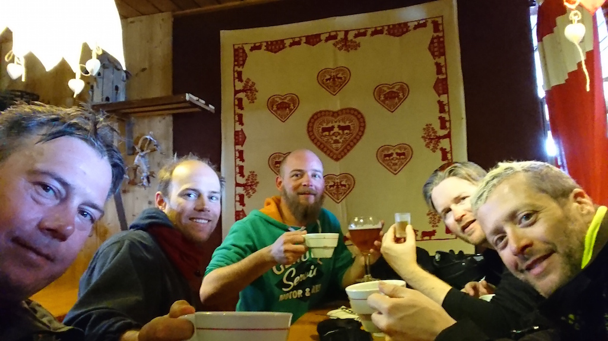
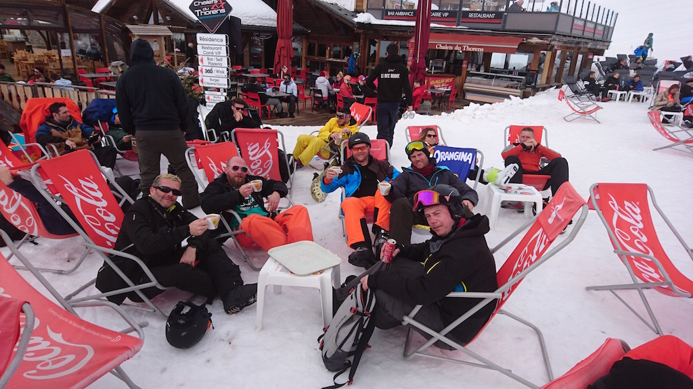
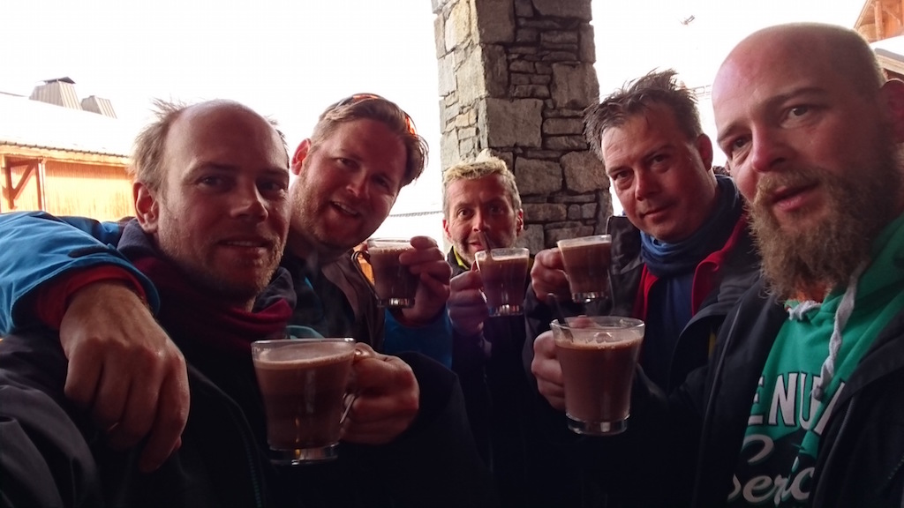

Ramen Restaurants in Amsterdam - Tue, Dec 18 2018
Maintaining the trend of frequent updates: I've made a handy list of Ramen Restaurants in Amsterdam. There is a place in Utrecht as well that I have visited buut since it's the only one I feel it doesn't deserve it's own listing.
MTGO Amonkhet Draft - Tue, May 09 2017
I played an Amonkhet draft recently on MTGO and had a pretty ridiculous deck! This was a league draft, meaning you draft in a pod and play anyone in the league. I had played one other draft before in person and both times red and green seemed really deep.
MTGO Amonkhet Intermediate Swiss Draft League 3-0 deck:
- 1 Heart-Piercer Manticore. A decent creature but you only rarely use the sacrifice effect. Embalm is the real value here. I first picked this, but I probably won't again.
- 3 Crocodile of the Crossing. These guys are nuts, and playing 3 in a row makes your opponent concede. This is even better on turn 3 off a Naga Vitalist
- 1 Warfire Javelineer. Even in a spell light deck like mine this did work. There are anough 1 thougness creatures like Blighted Bat to kill. I've also played this after combat to deal a final point of damage.
- 1 Bitterblade Warrior
- 2 Nimble-Blade Khenra. I was expecting these to be filler, but Prowess matters for making blocks awkward and they hold -1/-1 counters well.
- 1 Quarry Hauler
- 2 Minotaur Sureshot. Also filler, but a good mana sink and they tend to trade up late game or just push extra damage.
- 2 Hooded Brawler
- 2 Brute Strength
- 1 Cartouche of Strength
- 2 Naga Vitalist
- 1 Colossapede
- 2 Ornery Kudu
- 1 Desert Cerodon
- 2 Shed Weakness. I consider this an all star combat trick. The pump is great, the cost is right and the counter removal often relevant.
- 7 Mountain
- 9 Forest

This format leads to strange combat because of the power/thoughnesses of the creatures. There are many aggresive creatures on a low place on the curve (2,3,4 drops) that put your opponent on a short clock, but then they often have low toughness or trades happen with mediocre stuff that comes back mummified. Combat tricks can be pretty devastating and really take some playing around.
Trees per capita - Thu, Mar 30 2017
In the bar we were wondering about the number of trees per person and in which country has the most. In this Nature article: Mapping tree density at a global scale There is a convenvient Excel file with all the data.
The Top 5 (excluding overseas territories, which are sparsely populated islands with lots of trees):
| Country |
Population |
Trees |
Trees per Capita |
| Suriname |
543,925 |
9,316,227,072 |
17,128 |
| Guyana |
803,677 |
12,038,227,968 |
14,979 |
| Canada |
35,540,419 |
361,197,207,552 |
10,163 |
| Gabon |
1,711,294 |
12,874,760,192 |
7,523 |
| Finland |
5,463,596 |
30,417,848,320 |
5,567 |
We were thinking Latvia would be high up there (pop 1,990,351, trees 4,773,925,376, tpc 2,399) but it's 24th. The Netherlands ranks 170. Russia has the most trees at 698,338,508,800 and the saddest place is Vatican City with 0 trees. I do seem to recall a few trees in the central courtyard of the Vatican museum, but I assume they are excluded because they only look at trees in forest or otherwise natural growth. The definition used for tree by the way is "plant with 10cm diameter trunk measured at the base".
(Tree count Sep 09 2015, population count Jul 01 2015)
Val Thorens Chalet Tour 2017 - Tue, Mar 13 2017
Last week skiing in Val Thorens we did a tour with a stop at every single chalet in the valley.
- 8 Lifts
- 15 Slopes
- 10 Chalets
It took us about 7 hours, though you could do it more efficiently I'm sure!
I: La Folie Douce

II: Chalet de Caron

III: Les 2 Ours

IV: Moutière
V: Les 2 Lacs
VI: Les Aiguilles de Péclet

VII: La Marine

VIII: Le Caribou

IX: Chalet de Thorens - 360

X: Panoramic Caron
Val Thorens Piste Plan
Dumplings! - Tue, Feb 14 2017
I've been craving dumplings lately and watching a ton of videos on YouTube (shoutout to Maangchi and Brothers Green). I made some myself over the weekend and they were really delicious!

Fresh handmande dumplings

Sae Buchu Mandu (Korean shrimp and chive dumplings)

Potstickers!
Coursera courses review - Mon, Nov 14 2016
I thought it would be nice to review the courses I've been doing on Coursera. I usually go for things in Computer Science or Biology and I prefer the ones that are a more in depth and that include actual practice when possible.
(Not all of these are still available, many of them include the need for live humans so they are not 100% automated and always running.)
Bacteria and Chronic Infections - University of Copenhagen
Reasonable interesting, thought not very in depth. I feel that as soon as you understand that bactia form biofilms you've pretty much learned everything in this course. Teachers are calm and informative and I felt like I learned some stuff. I didn't end up excited though. Suitable for anyone who knows what bacteria are.
Dino 101: Dinosaur Paleobiology - University of Alberta
I was hugely disappointed. There were some interesting pictures, models and renders of dinosaurs and the lecturers were obviously very engaged. There was very little depth. In the forums people commented they had a great time doing this course with their elementary school age child and I agree that is about the level required for this one. Fun for 8 year olds who are into dinosaurs!
How Viruses Cause Disease - Columbia University
Amazing, 5/5, would study again. The lectures are wonderful, the teachers knowledgeable and the material both in depth and broad. Recommended for everyone, given you at least now basics about DNA.
Heterogeneous Parallel Programming - University of Illinois at Urbana-Champaign
A very fun course where you learn to put parallel programming in practice (the excercises are all on a GPU on EC2). This does not use any fancy libraries but aks you to write your stuff in C and really learn how this works. Recommended for everyone who wants some hands on practice and is proficient writing C.
VLSI CAD: Logic to Layout - University of Illinois at Urbana-Champaign
5/5 would do again. Professor is fantastic and the material is great and very in depth. Some of the programming assignments were actually challenging and I actually learned many new things that come in handy often! The assignments are checked based on output so you can do any language. I used mostly Perl and that was no problem (though many forum people struggled to optimize their programs so they would finish in reasonable time, but that was all just going for brute force versus a good solution).
Emergence of Life - University of Illinois at Urbana-Champaign
Quite a nice course and something I imagine in a first year university biology course. You need some background, but this is essentially a very engaging overview of, well, Life.
Sat, Nov 12 2016
I'm doing an online course on Coursera on Epigenetic Control of Gene Expression which is very cool if you are into that sort of thing. It's definitely much more in depth than most offerings on Coursera.
If you are not into that sort of thing, I would still recommend looking at this animation of X Inactivation. This means an X chromosome in a female cell is silenced, since female cells have 2 copies of X.
Interesting things I've learned about so far:
- Pericentromeric Heterochromatin
- It's possible for DNA to be transcribed in both directions!
- Parental X chromosomes are deactivated in the tissue that forms the placenta (the trophectoderm)
- Why Calico cats are female, unless they are Klinefelter male cats
Tue, Oct 25 2016
Website back after short 8 year absence ;)
This is about as oldschool as it gets, pretty much a homepage with links to stuff and random storage & blogging. Also email service for this domain now works again and you can email me at chris@interdictor.org
I have some old backups of previous sites and even the one I made when in university in 1996, so maybe I'll dig that up and put it here somewhere for posterity :)
Huiswerk
Kinderen die tafels leren hebben soms behoefte aan makkelijk en veel oefenen. Het is prettig als je zelf niet steeds sommen hoeft te verzinnen of op hoeft te letten. Deze Reken-oefen-pagina helpt je om eenvoudig een reeks tafels of deelsommen te oefenen. Werkt in Firefox en Safari (geloof ik).
Dit is al snel uitgegroeid tot een meer algemene webapp om te oefenen met:
- Alfabet leren
- Korte woorden leren
- De namen van dieren leren
- Gevoel voor breuken oefenen
Meer info via het GitHub Huiswerk repo.
Huiswerk Oefenen